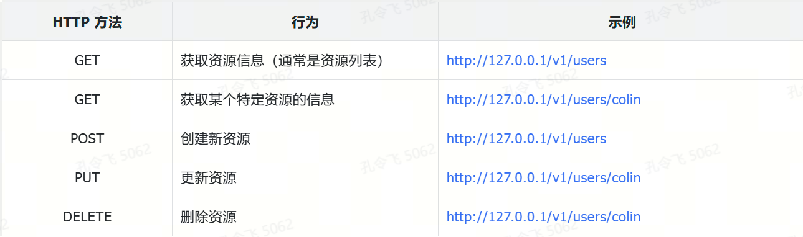

基于 Gin 实现一个 HTTP 服务器
代码结构化处理
本节课的前半部分，在 internal/apiserver/server.go 文件中分别实现了 gRPC 服务器和 HTTP 反向代理服务器。为了展示 Gin 框架开发 HTTP 服务的方法，server.go 文件还要添加实现 Gin HTTP 服务器的代码。三类服务器类型都集中在一个 Go 源文件中，如果没有一个清晰、简洁的代码结构，会导致 server.go 文件中的代码变得很难维护。
因此，在基于 Gin 实现 HTTP 服务器之前，需要重构 server.go 中的代码，使其能够清晰、简洁的包含三类服务器的初始化、创建及启动代码。
那么如何重构 server.go 中的代码呢？首先 gRPC 服务器、HTTP 反向代理服务器、HTTP 服务器均需具有以下方法：
- NewXXX：创建一个 XXX 服务器类型；
- Run：启动 XXX 服务器；
- GracefulStop：优雅关停 XXX 服务器的方法。Go 项目开发最佳实践中，建议停止服务器进程时，采用优雅关停的方法，以减少请求失败的概率。
所以，很自然可以想到，抽象出一个 Server 接口类型，用来代表服务器类型。这样不管创建的服务器类型是哪种，都可以在 UnionServer 结构体类型的 Run 方法中通过以下方法来统一启动服务：
// Run 启动服务并处理优雅关闭.g
func (s *UnionServer) Run() error {
// 启动服务
s.srv.RunOrDie()
return nil
}
通过将服务器抽象成一个服务器接口类型，从而实现UnionServer 结构体类型的 Run 方法代码复用。
在 Go 项目开发中，gRPC 服务器、HTTP 反向代理服务器、HTTP 服务器，在不同应用中，都可能被实现。所以，为了进一步提高代码的复用度，可以考虑将 Server 接口定义在 pkg/server 或者 internal/pkg/server 目录中。本课程选择放在 internal/pkg/server 目录中，因为 server 包需要经过一段时间的验证才能够确保 server 包功能完整、独立，适合对其他项目共享使用。
在 Go 项目开发中，扩展功能有一个标准的开发模式，如代码清单 7-7 所示。
package server
import (
"context"
)
// Server 定义所有服务器类型的接口.
type Server interface {
// RunOrDie 启动服务器.
RunOrDie()
// GracefulStop 优雅关停服务器.
GracefulStop(ctx context.Context)
}
// HTTP 服务器实现.
type HTTPServer struct{}
// NewHTTPServer 创建 HTTPServer 实例.
func NewHTTPServer() (*HTTPServer, error) {
return &HTTPServer{}, nil
}
// RunOrDie 实现了 Server 接口的 RunOrDie 方法.
func (s *HTTPServer) RunOrDie() {}
// GracefulStop 实现了 Server 接口的 GracefulStop方法.
func (s *HTTPServer) GracefulStop() {}
// gRPC 服务器实现
type GRPCServer struct{}
// NewGRPCServer 创建 GRPCServer 实例.
func NewGRPCServer() (*GRPCServer, error) {
return &GRPCServer{}, nil
}
// RunOrDie 实现了 Server 接口的 RunOrDie 方法.
func (s *GRPCServer) RunOrDie() {}
// GracefulStop 实现了 Server 接口的 GracefulStop方法.
func (s *GRPCServer) GracefulStop() {}
在代码清单 7-7 中，首先定义一个 Server 接口类型。根据服务器实现类别，分别创建需要实现的类型，例如 HTTPServer、GRPCServer，之后给这些类型添加满足 Server 接口的方法及创建函数。根据设计，internal/pkg/server 目录下文件如下：
$ ls internal/pkg/server/
doc.go grpc_server.go http_server.go reverse_proxy_server.go server.go
grpc_server.go 用来实现 gRPC 服务器，reverse_proxy_server.go 用来实现 HTTP 反向代理服务器，http_server.go 用来实现 HTTP 服务器，server.go 实现了 Server 接口定义及其他共用函数。Server 接口定义如下：
// Server 定义所有服务器类型的接口.
type Server interface {
RunOrDie()
GracefulStop(ctx context.Context)
}
在开发 Go 共享包时，需要遵循包功能完整、包功能稳定、包功能独立、包功能可定制化原则。在开发 Go 共享包时，通常使用函数选项设计模式（Functional Options Pattern）来定制化包的功能。另外，Go 共享包中不要使用 github.com/onexstack/miniblog/internal/pkg/log 这种项目定制的日志包，因为不同项目使用的日志包是不同的，可以通过 WithLogger 函数选项来设置调用方使用的 Logger。Go 共享包还要避免使用 init() 函数、panic 这种调用方很难感知的代码实现。
server 包中导入了 github.com/onexstack/miniblog/internal/pkg/log 包，这是因为 server 包是项目内共享的，使用内部包问题也不大。
github.com/onexstack/miniblog/internal/pkg/server 包的完整实现代码见 feature/s11 分支。server 包是功能独立、完整的共享包，所以其中不会实现业务相关的代码。但是 miniblog 在服务启动时需要处理运行时配置、初始化数据库、初始化各类实例（例如认证、鉴权等），加载业务路由等，所以在 internal/apiserver 目录下，需要基于 server 包进一步结构化代码。
internal/apiserver 目录下代码结构化思路也很明晰，先进行各类初始化操作，之后根据服务器类型，调用 server 包创建对应的服务器实例，然后调用服务器实例的 RunOrDie 方法启动服务器。运行时配置中的配置项功能一般分为两类：实例初始化配置和创建服务器类型实例时需要的配置。
所以，基于运行时配置，我们还可以再将配置分类，通过运行时配置生成服务器创建或启动时需要的服务器配置 ServerConfig。为了将代码再次按功能进行分类，方便未来的维护，可以基于 ServerConfig 创建三个上层的服务器类型，例如 ginServer、grpcServer、reverseProxyServer，并在 xxxServer 的创建方法中，进行相匹配的初始化、路由加载、实例创建等代码实现。
根据上述设计思路，internal/apiserver/server.go 结构化后的源码如代码清单 7-8 所示。
const (
// GRPCServerMode 定义 gRPC 服务模式.
// 使用 gRPC 框架启动一个 gRPC 服务器.
GRPCServerMode = "grpc"
// GRPCServerMode 定义 gRPC + HTTP 服务模式.
// 使用 gRPC 框架启动一个 gRPC 服务器 + HTTP 反向代理服务器.
GRPCGatewayServerMode = "grpc-gateway"
// GinServerMode 定义 Gin 服务模式.
// 使用 Gin Web 框架启动一个 HTTP 服务器.
GinServerMode = "gin"
)
// Config 配置结构体，用于存储应用相关的配置.
// 不用 viper.Get，是因为这种方式能更加清晰的知道应用提供了哪些配置项.
type Config struct {
ServerMode string
JWTKey string
Expiration time.Duration
HTTPOptions *genericoptions.HTTPOptions
GRPCOptions *genericoptions.GRPCOptions
}
// UnionServer 定义一个联合服务器. 根据 ServerMode 决定要启动的服务器类型.
//
// 联合服务器分为以下 2 大类：
// 1. Gin 服务器：由 Gin 框架创建的标准的 REST 服务器。根据是否开启 TLS，
// 来判断启动 HTTP 或者 HTTPS；
// 2. GRPC 服务器：由 gRPC 框架创建的标准 RPC 服务器
// 3. HTTP 反向代理服务器：由 grpc-gateway 框架创建的 HTTP 反向代理服务器。
// 根据是否开启 TLS，来判断启动 HTTP 或者 HTTPS；
//
// HTTP 反向代理服务器依赖 gRPC 服务器，所以在开启 HTTP 反向代理服务器时，会先启动 gRPC 服务器.
type UnionServer struct {
srv server.Server
}
// ServerConfig 包含服务器的核心依赖和配置.
type ServerConfig struct {
cfg *Config
}
// NewUnionServer 根据配置创建联合服务器.
func (cfg *Config) NewUnionServer() (*UnionServer, error) {
// 一些初始化代码
// 创建服务配置，这些配置可用来创建服务器
serverConfig, err := cfg.NewServerConfig()
if err != nil {
return nil, err
}
log.Infow("Initializing federation server", "server-mode", cfg.ServerMode)
// 根据服务模式创建对应的服务实例
// 实际企业开发中，可以根据需要只选择一种服务器模式.
// 这里为了方便给你展示，通过 cfg.ServerMode 同时支持了 Gin 和 GRPC 2 种服务器模式.
var srv server.Server
switch cfg.ServerMode {
case GinServerMode:
srv, err = serverConfig.NewGinServer(), nil
default:
srv, err = serverConfig.NewGRPCServerOr()
}
if err != nil {
return nil, err
}
return &UnionServer{srv: srv}, nil
}
// Run 启动服务并处理优雅关闭.
func (s *UnionServer) Run() error {
s.srv.RunOrDie()
return nil
}
// NewServerConfig 创建一个 *ServerConfig 实例.
// 进阶：这里其实可以使用依赖注入的方式，来创建 *ServerConfig.
func (cfg *Config) NewServerConfig() (*ServerConfig, error) {
return &ServerConfig{cfg: cfg}, nil
}
在代码清单 7-8 中，定义了三种服务器类型：
- grpc：启动一个 gRPC 服务器；
- grpc-gateway：启动一个 gRPC 服务器和 HTTP 反向代理服务器；
- gin：基于 Gin 框架启动一个 HTTP 服务器。
代码清单 7-8 通过 cfg.NewServerConfig() 调用，基于运行时配置，创建了服务器配置，服务器配置中包含了服务器创建和运行时的依赖配置。通过这种方式，进一步将运行时配置进行分类，这样可以使代码逻辑更加清晰，利于后期的代码维护，尤其是项目规模很大时。根据 cfg.ServerMode 的类型，创建对应的服务器实例（NewGinServer 代码会在下一节实现），并最终在 UnionServer 的 Run 方法中调用服务器实例的 RunOrDie 方法启动服务器。
为了便于维护代码，将 ginServer 和 grpcServer 相关的代码实现分别保存在了 internal/apiserver/目录下的 httpserver.go 和 grpcserver.go 文件中。
grpcserver.go 文件中代码实现如代码清单 7-9 所示。
// grpcServer 定义一个 gRPC 服务器.
type grpcServer struct {
srv server.Server
// stop 为优雅关停函数.
stop func(context.Context)
}
// NewGRPCServerOr 创建并初始化 gRPC 或者 gRPC + gRPC-Gateway 服务器.
// 在 Go 项目开发中，NewGRPCServerOr 这个函数命名中的 Or 一般用来表示“或者”的含义，
// 通常暗示该函数会在两种或多种选择中选择一种可能性。具体的含义需要结合函数的实现
// 或上下文来理解。以下是一些可能的解释：
// 1. 提供多种构建方式的选择
// 2. 处理默认值或回退逻辑
// 3. 表达灵活选项
func (c *ServerConfig) NewGRPCServerOr() (server.Server, error) {
// 创建 gRPC 服务器
grpcsrv, err := server.NewGRPCServer(
c.cfg.GRPCOptions,
func(s grpc.ServiceRegistrar) {
apiv1.RegisterMiniBlogServer(s, handler.NewHandler())
},
)
if err != nil {
return nil, err
}
if c.cfg.ServerMode == GRPCServerMode {
return &grpcServer{
srv: grpcsrv,
stop: func(ctx context.Context) {
grpcsrv.GracefulStop(ctx)
},
}, nil
}
// 先启动 gRPC 服务器，因为 HTTP 服务器依赖 gRPC 服务器.
go grpcsrv.RunOrDie()
httpsrv, err := server.NewGRPCGatewayServer(
c.cfg.HTTPOptions,
c.cfg.GRPCOptions,
func(mux *runtime.ServeMux, conn *grpc.ClientConn) error {
return apiv1.RegisterMiniBlogHandler(context.Background(), mux, conn)
},
)
if err != nil {
return nil, err
}
return &grpcServer{
srv: httpsrv,
stop: func(ctx context.Context) {
grpcsrv.GracefulStop(ctx)
httpsrv.GracefulStop(ctx)
},
}, nil
}
// RunOrDie 同时启动 HTTP 和 gRPC 服务器，异常时退出.
func (s *grpcServer) RunOrDie() {
s.srv.RunOrDie()
}
// GracefulStop 优雅停止 HTTP 和 gRPC 服务器.
func (s *grpcServer) GracefulStop(ctx context.Context) {
s.stop(ctx)
}
在代码清单 7-9 中，NewGRPCServerOr 函数用来创建 *grpcServer 类型的实例。NewGRPCServerOr 函数名中的 Or 一般用来表示“或者”的含义，通常暗示该函数会在两种或多种选择中选择一种可能性。具体的含义需要结合函数的实现或上下文来理解。以下是一些可能的解释：提供多种构建方式的选择、处理默认值或回退逻辑。
在 Go 项目开发中，还有其他一些类似的函数命名方式，例如：
- MustXXX：函数必须成功，如果失败直接 panic。这种命名用来表示不可恢复的错误或强制性的操作，例如 MustParse、MustGet 等；
- XXXOrDie：明确表示失败会导致程序退出（通常会调用 os.Exit），例如 InitOrDie、RunOrDie 等；
- XXXOrPanic：如果操作失败直接 panic（与 MustXXX 功能上类似，但显式在名字中使用 Panic 提醒），例如 StartOrPanic、ConnectOrPanic 等；
- TryXXX：用于尝试操作，如果失败则返回错误（通常不会直接退出或者 panic，业务层可决定如何处理），例如 TryParse、TryConnect 等；
- EnsureXXX：常用于确保某个操作成功，如果未成功则处理失败情况，通常伴随日志记录或其他处理逻辑，例如 EnsureDNSAddon、EnsureChain 等。
在代码清单 7-9 中，会根据 ServerMode 来判断，是否需要启动 HTTP 反向代理服务器。如果 ServerMode 是 grpc-gateway，则会在 Go 协程中启动 gRPC 服务器，再返回 HTTP 反向代理服务器实例。如果 ServerMode 是 grpc，则直接返回 gRPC 服务器实例。grpcServer 结构体中包含了 stop 字段，用来优雅关停服务器。
至此，代码结构化处理完成，优化后的代码见 feature/s11 分支。
基于 Gin 框架实现 HTTP 服务器
在 Go 项目开发中，可以使用 net/http 包开发一个 HTTP 服务器，但更推荐使用优秀的 Web 框架来开发 HTTP 服务器。当前最受环境的 HTTP Web 框架时 Gin。HTTP 服务器包含了一些 API 接口实现，这些 API 接口根据 miniblog 项目的接口规范设计需要遵循 REST 规范。本节会简单介绍 REST 规范并基于 Gin 框架实现一个符合 REST 规范的 HTTP 服务器。
REST API 介绍
REST 代表表现层状态转移（Representational State Transfer），由 Roy Fielding 在他的论文中提出。REST 是一种架构风格，指代一组架构约束条件和原则。满足这些约束条件和原则的应用程序或设计即是 RESTful。
REST 规范将所有内容视为资源，即网络上的一切皆为资源。REST 架构对资源的操作包括获取、创建、修改和删除，而这些资源操作与 HTTP 协议的 GET、POST、PUT 和 DELETE 方法一一对应。HTTP 动词与 REST 风格的 CRUD 操作关系如表 7-1 所示。

对资源的操作应该满足安全性和幂等性：
- **安全性：**不会改变资源状态，可以理解为只读的；
- **幂等性：**执行 1 次和执行 N 次，对资源状态改变的效果是等价的。
关于 REST 规范的更多介绍请参考 docs/devel/zh-CN/conversions/api.md 文档。
如何学习 Gin 框架
在初次接触到 Gin 框架时，开发者并不知道如何使用 Gin，所以在开发 miniblog 项目的 HTTP 服务之前，需要先学习 Gin 框架。Gin 框架的学习网上有很多教程，可以自行搜索学习。推荐直接阅读 gin 项目仓库的 README 文件。
学习 Gin 框架最快捷的方式是快速写一个 Hello World 程序，并基于 Hello World 慢慢添加功。代码清单 7-10 是一个 Gin Hello World 程序。
package main
import (
"net/http"
"github.com/gin-gonic/gin"
)
func main() {
r := gin.Default()
r.GET("/ping", func(c *gin.Context) {
c.JSON(http.StatusOK, gin.H{"message": "pong"})
})
// HTTP 服务监听在 :3333 端口上
r.Run(":3333")
}
此外，Gin 官网仓库也提供了大量满足不同场景的示例可供学习：https://github.com/gin-gonic/examples。
使用 Gin 框架实现 HTTP 服务器
在学习了 Gin 框架之后，便可以基于 Gin 框架为 miniblog 实现一个 HTTP 服务器。根据 miniblog 服务器实现设计，需要在 internal/apiserver/httpserver.go 文件中实现 NewGinServer 方法，用来创建 *ginServer 的实例，并为实例实现 server.Server 接口定义的方法 RunOrDie 和 GracefulStop。实现后的 httpserver.go 代码如代码清单 7-11 所示。
// ginServer 定义一个使用 Gin 框架开发的 HTTP 服务器.
type ginServer struct {
srv server.Server
}
// 确保 *ginServer 实现了 server.Server 接口.
var _ server.Server = (*ginServer)(nil)
// NewGinServer 初始化一个新的 Gin 服务器实例.
func (c *ServerConfig) NewGinServer() server.Server {
// 创建 Gin 引擎
engine := gin.New()
// 注册 REST API 路由
c.InstallRESTAPI(engine)
httpsrv := server.NewHTTPServer(c.cfg.HTTPOptions, engine)
return &ginServer{srv: httpsrv}
}
// 安装/注册 API 路由。路由的路径和 HTTP 方法，严格遵循 REST 规范.
func (c *ServerConfig) InstallRESTAPI(engine *gin.Engine) {
// 注册业务无关的 API 接口
InstallGenericAPI(engine)
// 创建核心业务处理器
handler := handler.NewHandler()
// 注册健康检查接口
engine.GET("/healthz", handler.Healthz)
}
// InstallGenericAPI 安装业务无关的路由，例如 pprof、404 处理等.
func InstallGenericAPI(engine *gin.Engine) {
// 注册 pprof 路由
pprof.Register(engine)
// 注册 404 路由处理
engine.NoRoute(func(c *gin.Context) {
c.JSON(http.StatusNotFound, "Page not found.")
})
}
func (s *ginServer) RunOrDie() {
s.srv.RunOrDie()
}
// GracefulStop 优雅停止服务器.
func (s *ginServer) GracefulStop(ctx context.Context) {
s.srv.GracefulStop(ctx)
}
在代码清单 7-11 中，NewGinServer 函数通过 gin.New() 创建了一个 *gin.Engine 类型的实例 engine，并为 engine 安装路由。同样，为了提高代码的可维护性，将安装 HTTP 路由的代码实现统一放在一个专门的路由安装方法 InstallRESTAPI 中。
在 InstallRESTAPI 方法中，为了便于管理 HTTP 路由，将 HTTP 路由分为了两大类分别安装：通用 HTTP 路由和业务 HTTP 路由。InstallGenericAPI 函数用来安装通用 HTTP 路由。其中包括 pprof 路由和 404 路由。pprof 路由用来提供性能调试和优化的 API 接口。404 路由，用来为未匹配到任何路由的 HTTP 请求（404 错误）提供自定义响应。InstallRESTAPI 方法中还安装了健康检查路由 GET /healthz，其路由实现方法为 handler.Healthz。
在企业级应用开发中，一个合格的 Web 服务需要提供健康检查接口，以供其他服务探测 Web 服务的健康状态。读者可以根据需求，在 /healthz 接口中添加任意必要的校验逻辑。
至此，成功为 miniblog 实现了 HTTP 服务器，完整代码见 feature/s12 分支。
编译并测试
要想测试 HTTP 服务器，需要修改 $HOME/.miniblog/mb-apiserver.yaml 中的 server-mode 配置项的值为 gin。之后运行以下命令编译并测试：
$ make build
$ _output/mb-apiserver
新建一个 Linux 终端，并使用 curl 来请求 HTTP 服务器：
$ curl http://127.0.0.1:5555/healthz
{"timestamp":"2025-06-20 09:43:38"}
可以看到，成功通过 curl 命令请求基于 Gin 框架开发的 HTTP 服务器。